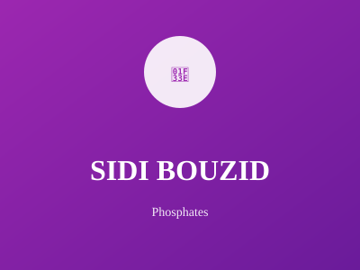

Berceau de la révolution tunisienne

Berceau de la Révolution tunisienne de 2010-2011. Sidi Bouzid est une région agricole importante avec une forte production de céréales et d'olives. Elle a joué un rôle historique dans les mouvements de libération.